Étalonnage de la caméra et du robot#
L’étalonnage est l’étape cruciale qui permet d’établir la relation géométrique exacte entre le monde réel (coordonnées en millimètres) et l’image capturée par la caméra (pixels). Sans un étalonnage précis, la précision du système de prélèvement est compromise, ce qui rend l’ensemble de l’application peu fiable.
Tip
Il n’est pas nécessaire de recalibrer si la position du FlexiBowl® est modifiée.
Pourquoi l’étalonnage est-il nécessaire ?#
L’étalonnage est nécessaire car chaque combinaison de capteur et d’objectif introduit des altérations spécifiques dans l’image. Son objectif principal est de corriger ces distorsions.
Types de distorsions optiques#

Exemples de distorsions optiques : pas de distorsion (à gauche), distorsion en barillet (au centre), distorsion en coussinet (à droite)#
Étape 1 : La grille d’étalonnage#
Error
S’assurer d’avoir :
Backlight allumé (SETUP > FlexiBowl® Setup > Config FlexiBowl® > Light ON activé)
Toplight éteint
La grille d’étalonnage ARS doit être placée sur le FlexiBowl® :
Étape |
Opération |
Image |
|---|---|---|
0 |
S’il y en a, retirer les déviateurs montés sur le FlexiBowl®. |
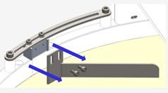 |
1 |
Desserrer les quatre vis de la bride centrale du FlexiBowl®. |
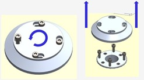 |
2 |
Tourner légèrement la bride centrale dans le sens anti-horaire et l’enlever. |
|
3 |
Soulever avec précaution et retirer la surface. |
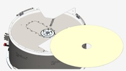 |
4 |
Si nécessaire, fixer les entretoises magnétiques sur les quatre côtés de la grille. |
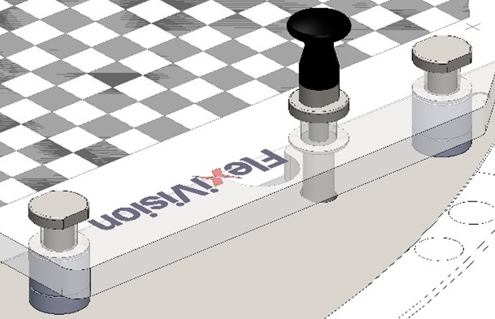 |
5 |
Positionner la grille ARS sur le FlexiBowl® en alignant les ergots de positionnement avec les trous prédéfinis sur le bord du rétro-éclairage. |
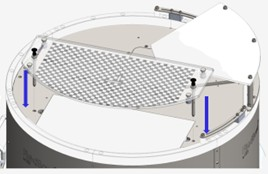 |

Positionnement correct de la grille d’étalonnage ARS sur le FlexiBowl®#
Attention
La grille d’étalonnage doit être positionnée à la même hauteur que l’objet utilisé dans l’application.
Pour cette raison, il est fourni avec des entretoises à insérer dans les chevilles de la grille avant de l’installer sur le FlexiBowl®.
Les entretoises ont pour fonction de soulever la grille au niveau de la hauteur de la pièce, garantissant ainsi un étalonnage précis.


Étape 2 : Réglages fondamentaux#
5 |
Accéder à la section SETUP de la caméra à partir de la section SETUP |
6 |
Cliquer sur le bouton Config Camera de la caméra correspondante |
7 |
Cliquer sur EXPERT à partir de la page Camera FLB |
8 |
Mettre la caméra en mode « live display » Avant de régler l’ouverture, activer le mode d’affichage en continu : 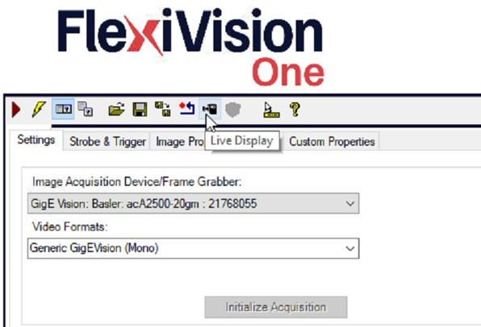 |
9 |
Régler l’ouverture du diaphragme

|
10 |
Régler manuellement la mise au point de la caméra

|
11 |
Cliquer sur Retour |
Warning
Attention à la profondeur de champ
La mise au point doit garantir la netteté sur toute la surface du FlexiBowl®, et pas seulement au centre.
Si le centre est net mais que les bords sont flous :
Vérifier que l’optique est propre
Vérifier que la distance de travail est correcte
Vérifier que la caméra est parfaitement parallèle à la surface de travail du FlexiBowl®
Fermer légèrement le diaphragme pour augmenter la profondeur de champ
Si le problème persiste, il peut être nécessaire de revoir l’assemblage mécanique de la caméra.
Error
Si, en cliquant plusieurs fois sur le bouton RUN, un écran complètement bleu apparaît au moins une fois, consultez Dépannage Camera Setup
12 |
Régler l’exposition de la caméra
|
13 |
Cliquer sur NEXT |
 , répéter cette étape jusqu’à trouver la bonne exposition pour l’image :
, répéter cette étape jusqu’à trouver la bonne exposition pour l’image :
Exemple d’exposition correcte : contraste élevé, motif bien défini, absence de zones brûlées#
Tip
Optimisation de l’exposition
Plus le temps est long, plus la lumière pénètre dans l’optique
Temps trop court : Image sombre, motif peu visible
Temps trop long : Image surexposée, perte de détails
Temps optimal : Contraste maximal sans saturation
Tip
En cas de doutes lors de la configuration, consulter le bouton INFO présent sur la page actuelle.
Étape 3 : Étalonnage de la caméra#
14 |
Vérifier que la grille est centrée, nette et entièrement visible avant d’acquérir l’image d’étalonnage. |
15 |
Cliquer sur « Grab Image » pour prendre une photo de la grille d’étalonnage. Vérifier visuellement :
|
16 |
Configurer les valeurs « Tile Size X » et « Tile Size Y » toutes deux à 10 pour tous les modèles de FlexiBowl® 500 à 1200. |
17 |
Cliquer sur « Calibrate » pour effectuer l’étalonnage |
18 |
Évaluer la qualité de l’étalonnage Le paramètre « Result Calibration » renvoie une valeur : 🟢 Excellent (vert) : Excellent étalonnage, précision optimale. 🟠 Acceptable (orange) : Étalonnage acceptable, précision bonne mais pas optimale. 🔴 Bad (rouge) : Mauvais étalonnage, précision insuffisante. À recommencer obligatoirement. Important N’accepter que les étalonnages excellents 🟢 ; les autres résultats compromettront le fonctionnement de l’ensemble de l’application. |
Note
Critère d’acceptabilité
Pour obtenir un résultat satisfaisant, il faut régler l’ouverture, faire la mise au point et choisir la meilleure exposition pour l’application.
Warning
Erreurs pendant le calcul
Si le calcul de l’étalonnage échoue :
Causes possibles :
Motif non détecté (image trop sombre ou surexposée)
Les carrés de la grille sont partiellement masqués
Distorsion excessive (caméra trop proche ou trop éloignée)
Saisie incorrecte du paramètre Tile Size
Solution :
Vérifier et améliorer la qualité de l’image acquise
S’assurer que toute la grille est visible et bien éclairée
Vérifier la valeur Tile Size
Répéter l’acquisition de l’image (Grab Image) et réessayer
Tip
En cas de doutes lors de la configuration, consulter le bouton INFO présent sur la page actuelle.
Lorsqu’il faut recommencer l’étalonnage#
Étalonner à nouveau quand : |
Premier réglage du système (obligatoire). Après avoir changé la position de la caméra. Après avoir déplacé le robot. Si des erreurs systématiques de prélèvement sont constatées. |
Il n’est pas nécessaire de re-étalonner : |
Si vous changez le type de pièce pour le même FlexiBowl® et la même caméra. Si vous modifiez la mise au point ou l’ouverture de l’objectif. Si vous modifiez la recette du logiciel. Si vous ajustez les paramètres de reconnaissance. Si vous mettez à jour les programmes du robot. |
Étalonnage du robot#
Étape 4 : Montage du laser#
19 |
Une fois un étalonnage de très bonne qualité obtenu, cliquer sur Une fenêtre demandant l’étalonnage du robot avant de continuer apparaît ; NE PAS cliquer sur « Oui » et suivre les étapes suivantes |
20 |
Monter le Laser Tool avec son support personnalisé Important Le support pour monter l’outil laser en lieu et place de l’outil du robot N’EST PAS fourni, car il varie pour chaque robot et doit être personnalisé. 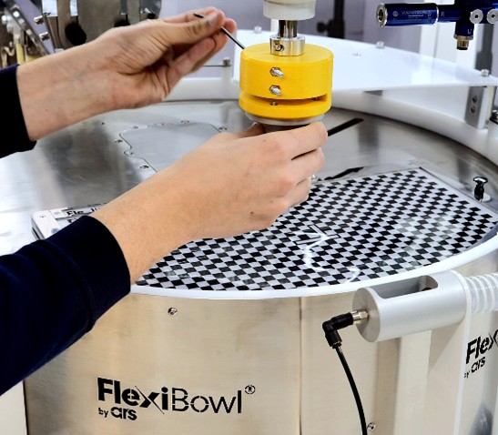 |
21 |
Positionner le Spacer Bracket (A) sous le laser 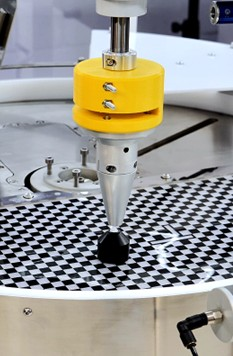 |
22 |
Abaisser le laser jusqu’au niveau du spacer (A), afin que le laser soit à exactement 3 cm de la grille d’étalonnage 
|
23 |
Retirer le Spacer Bracket 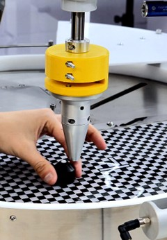 |
24 |
Allumer le laser 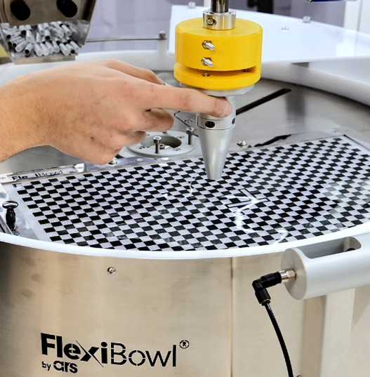 |
 .
.Tip
En cas de doutes lors de la configuration, consulter le bouton INFO présent sur la page actuelle.
Étape 5 : Dessiner un plan en 3 points#
25 |
Amener le laser au point d’origine |
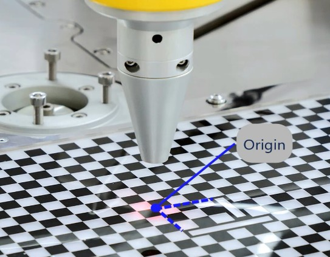 |
26 |
Amener le laser au point final de l’axe X |
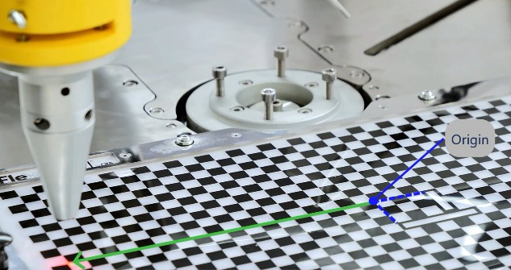 |
27 |
Amener le laser au point final de l’axe Y |
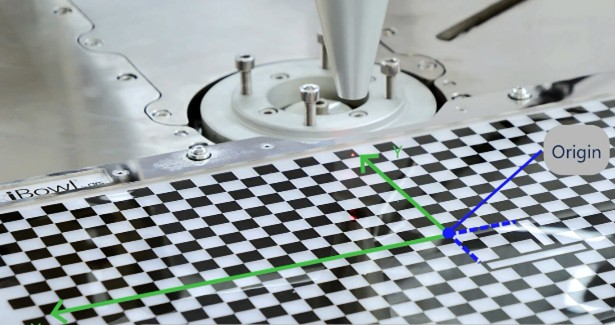 |
Tip
En cas de doutes lors de la configuration, consulter le bouton INFO présent sur la page actuelle.
Étape 6 : Vérification de la trajectoire du robot#
28 |
Ramener le laser au point d’origine |
29 |
Déplacer le robot depuis sa teach pendant le long des axes X et Y. |
30 |
Vérifier que la trajectoire correcte est suivie : le robot, en se déplaçant uniquement le long des axes X et Y, doit suivre correctement les lignes de la grille |
31 |
Cliquer sur « YES » 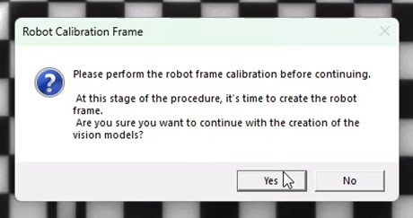 |
Tip
En cas de doutes lors de la configuration, consulter le bouton INFO présent sur la page actuelle.
Étape 7 : Sauvegarde de la recette de base#
32 |
Cliquer sur |
33 |
Vérifier que la recette contenant tous les réglages et l’étalonnage est sélectionnée dans le menu de gauche et cliquer sur |
34 |
Cela nous permettra d’avoir toutes les étapes effectuées jusqu’à présent sauvegardées séparément, de sorte que nous aurons une base pour toutes les recettes futures contenant les différents modèles pour le système calibré |
35 |
Pour continuer à créer des modèles, dupliquer la recette de base, renommer comme souhaité et cliquer sur |

 : une page s’ouvrira avec la liste de tous les modèles disponibles
: une page s’ouvrira avec la liste de tous les modèles disponibles{kind=link}
{kind=link}
{kind=link}
{kind=link}
{kind=link}
{kind=link}
{kind=link}
{kind=link}
{kind=link}
Problèmes courants lors de l’étalonnage#
Motif non détecté#
Warning
Erreur : « Unable to detect calibration pattern »
Cause : Le logiciel ne peut pas identifier le motif de la grille.
Solutions :
Augmenter le contraste (ajuster l’exposition ou l’éclairage)
Vérifier que toute la grille est visible dans l’image
Améliorer la mise au point
Nettoyer la surface de la grille (la poussière ou les empreintes digitales peuvent interférer)
L’étalonnage est toujours « Bad » ou « Acceptable »#
Warning
Qualité d’étalonnage insuffisante
Si, malgré les réglages, l’étalonnage reste inférieur à « Excellent » :
Vérifier la distance de travail caméra-FlexiBowl® (elle doit être conforme aux calculs)
Vérifier que la caméra est parallèle au plan du FlexiBowl® (elle doit être parfaitement horizontale)
S’assurer que la caméra est stable (pas de vibrations pendant l’acquisition)
Vérifier que l’objectif est vissé à fond
Si le problème persiste, il peut s’agir d’un problème mécanique dans l’assemblage. Consulter Installation mécanique pour examen.
Étapes suivantes#
Une fois les étalonnages de la caméra et du robot terminés, passer à :